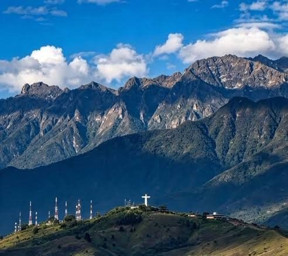
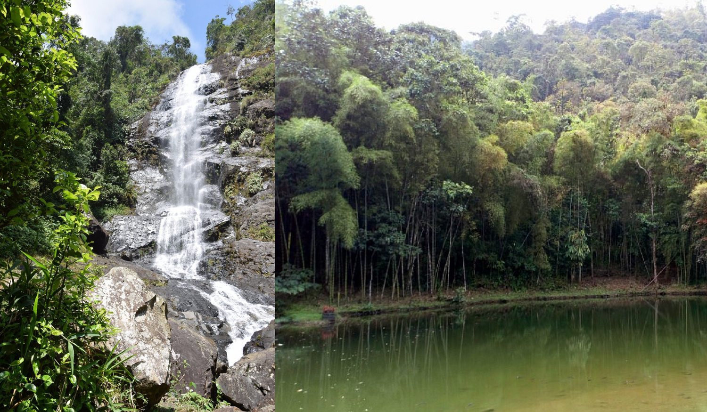
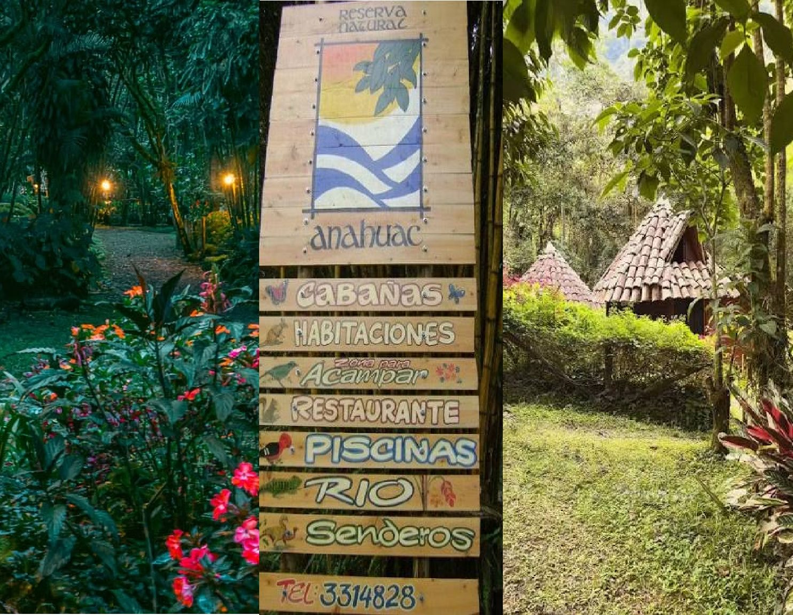
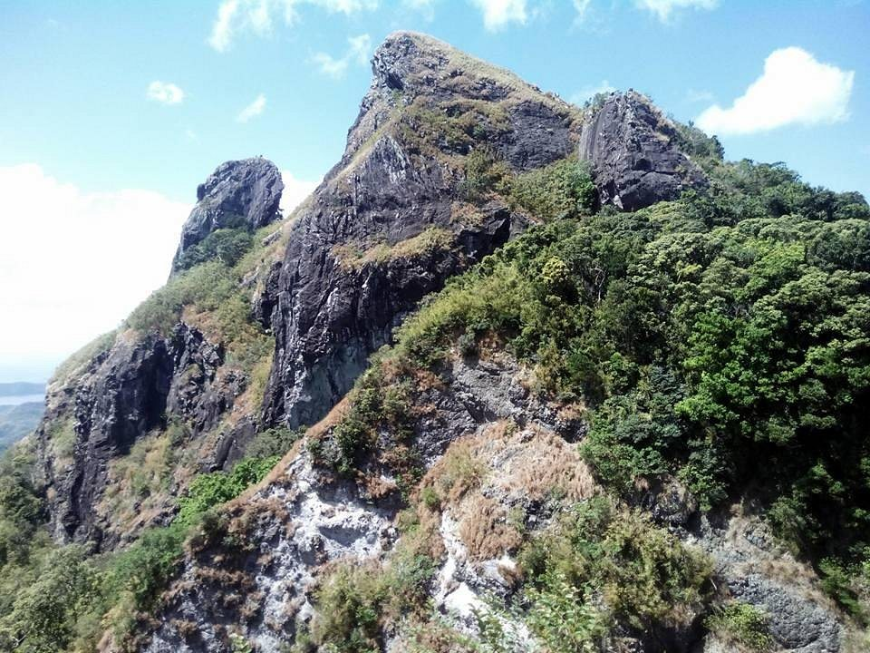
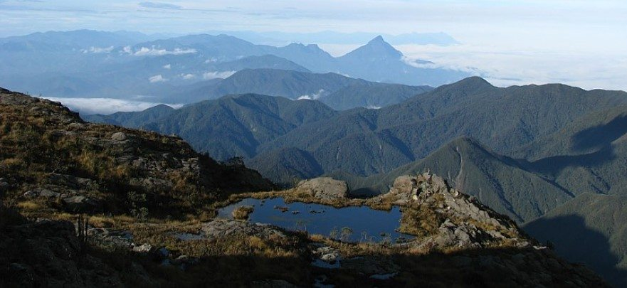
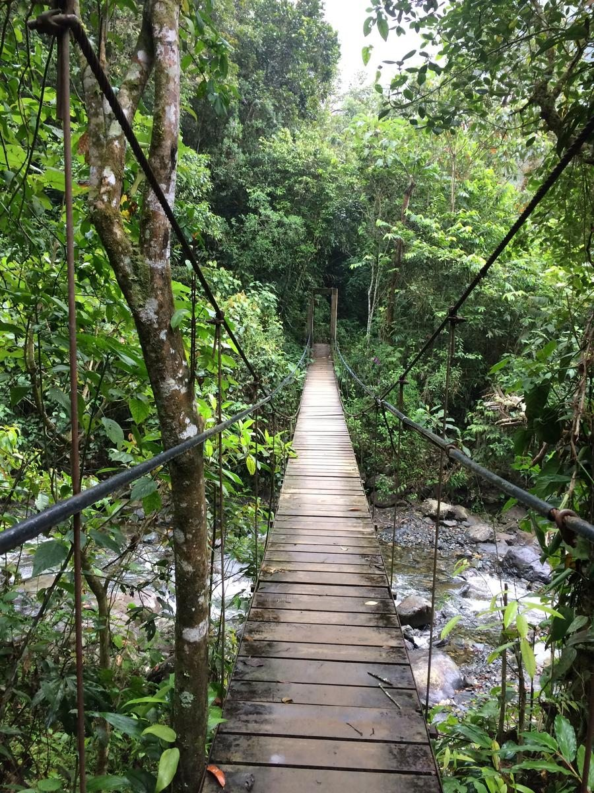

Farallones de Pance
Panorámica de las montañas que enmarcan el corregimiento y forman parte del paisaje de los Farallones de Cali.
Camina entre montañas, bosques y caminos junto al río Pance.
← Volver al inicioSeis fotografías compartidas para reconocer montañas, reservas y senderos del territorio.

Panorámica de las montañas que enmarcan el corregimiento y forman parte del paisaje de los Farallones de Cali.

Un entorno de bosque húmedo, agua y senderos para la educación y la contemplación ambiental.

Espacios verdes, senderos y alojamiento rural en un entorno de naturaleza.

Una de las cumbres reconocidas de los Farallones. Antes de planear el ascenso, consulta condiciones de ingreso y requisitos vigentes.

Paisaje de alta montaña y ecosistemas de niebla. Es una ruta exigente que requiere preparación y orientación.

Un recorrido de bosque y puente peatonal para apreciar el entorno del río Pance.